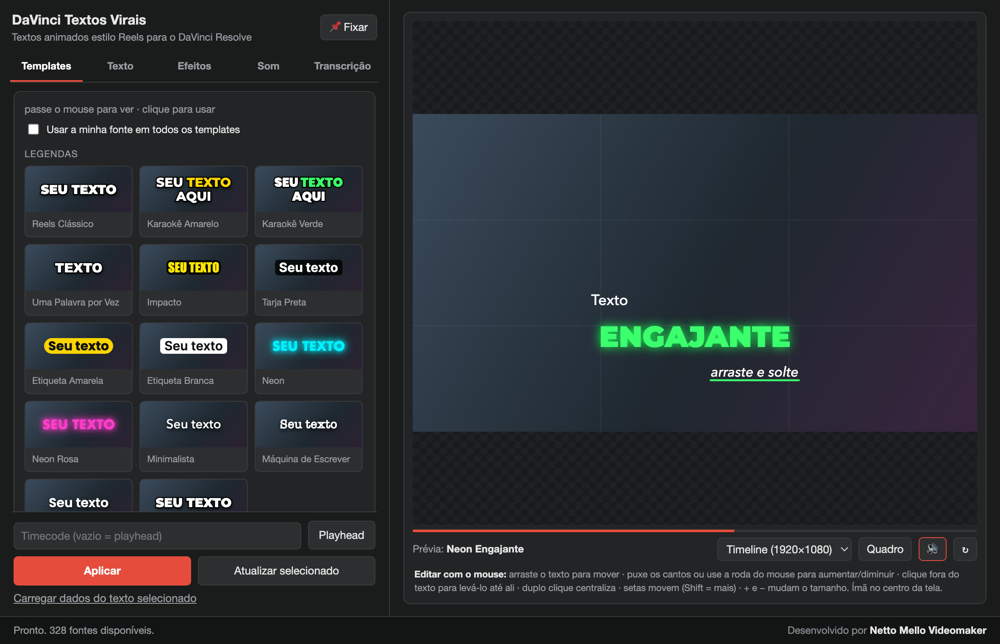

29 templates
14 legendas (Reels clássico, karaokê, neon, tarja, etiqueta…) e 15 composições com várias camadas.
29 templates prontos, letterings com várias camadas, animações de entrada e saída, efeitos, sons sincronizados e legendas por transcrição automática. Tudo com preview ao vivo, dentro do DaVinci Resolve.
14 legendas (Reels clássico, karaokê, neon, tarja, etiqueta…) e 15 composições com várias camadas.
Fontes misturadas, palavra gigante, script colorido, riscados e sublinhados que se desenham.
Pop, fade, subindo, digitação, palavra destacada… e saídas como encolher, deslizar ou apagar.
Contorno, sombra, brilho neon e caixa de fundo, com controle de cor, desfoque, distância e opacidade.
11 efeitos sonoros próprios (pop, whoosh, clique, impacto…) inseridos no frame exato e vinculados ao texto.
Com faster-whisper: gera uma legenda animada por frase ou por palavra, cada uma no seu tempo.
Veja a animação antes de aplicar. Arraste, aumente e posicione o texto com o mouse direto na tela.
Instale os templates como Fusion Titles e arraste da Biblioteca de Efeitos. A saída se ajusta à duração.
Funciona em 9:16, 16:9, 4:5 e 1:1, com a resolução certa em timelines verticais de Reels e Shorts.
Animações reais, desenhadas pelo mesmo motor do preview do plugin.
Templates, Texto, Efeitos, Som e Transcrição. Botão 📌 Fixar para deixar a janela por cima do Resolve.

Baixe o DaVinci-Textos-Virais.zip e abra a pasta.
macOS: dois cliques em Instalar.command (se o macOS bloquear: botão direito › Abrir).
Windows: botão direito em Instalar-Windows.bat › Executar como administrador.
No Resolve: Preferências › Sistema › Geral › External scripting using = Local.
Reinicie, abra Workspace › Workflow Integrations › DaVinci Textos Virais, cole a
chave DTV1-… que você recebeu e clique em Ativar.
▶ DaVinci Textos Virais — instalador Desenvolvido por Netto Mello Videomaker ✔ Plugin instalado Instalar a transcrição automática? [s/N] ▍
Pagamento único via Pix. Licença vitalícia, no seu nome, sem mensalidade.
No celular: copie e cole em Pix › Pix copia e cola no app do seu banco.

DaVinci Textos Virais v1.5 · macOS e Windows (beta) · ~600 KB
Baixar DaVinci Textos ViraisAo baixar, você recebe o plugin, os instaladores e o guia LEIA-ME. Na primeira vez, o plugin pede a sua chave de licença.
Ainda não tem a chave? Compre acima por R$ 19,00
R$ 19,00, pagamento único via Pix. Licença vitalícia, sem mensalidade e sem marca d'água.
Pague o Pix e mande o comprovante com o seu nome completo pelo WhatsApp. Você recebe a chave, que vai no seu nome, e o link do plugin. No DaVinci, abra o DaVinci Textos Virais, cole a chave e clique em Ativar. Não precisa de internet para ativar.
Os plugins de Workflow Integration são um recurso do DaVinci Resolve Studio. Na versão gratuita o menu Workflow Integrations não aparece.
O plugin foi feito e testado no macOS. O instalador do Windows está incluído como beta: se encontrar algum problema, avise.
Não. O plugin lista todas as fontes que o seu DaVinci reconhece e sempre usa uma combinação de fonte e estilo que existe no seu computador.
Não. Os 11 efeitos sonoros são sintetizados pelo próprio plugin. Você também pode adicionar os seus em "Meus sons…".
Na aba Templates, clique em "Instalar na Biblioteca". Depois arraste de Effects Library › Titles › Fusion Titles › DaVinci Textos Virais.